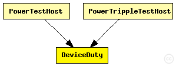
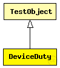

This documentation is released under the Creative Commons license
This documentation is released under the Creative Commons licenseTest module of a two phase duty cycle device. Primarily for testing multiple accounts.
Alternates between ON and OFF state twice in each period. Switching from OFF to ON (draws wakeup ENERGY). The energy consumed in each of the two ON periods and by the transitions are assigned to accounts DUTY0, DUTY1, and WAKE respectively.
parameters: draw 'current0'(mA) for dutyCycle0 * period(sec) draw 0 mA for 'gap' * period(sec) draw 'current1'(mA) for dutyCycle1 * period(sec) draw 0 mA for rest of period draw 'wakeup' (mWs) for each off->on transition
The following diagram shows usage relationships between types. Unresolved types are missing from the diagram. Click here to see the full picture.
The following diagram shows inheritance relationships for this type. Unresolved types are missing from the diagram. Click here to see the full picture.
| Name | Type | Description |
|---|---|---|
| TestObject | simple module |
Basis definition for all test objects. |
| Name | Type | Description |
|---|---|---|
| PowerTestHost | compound module |
Empty host for simple power test. |
| PowerTrippleTestHost | compound module |
Empty host with three devices for simple power test. |
| Name | Type | Default value | Description |
|---|---|---|---|
| debug | bool | false | |
| period | double | ||
| dutyCycle0 | double | ||
| current0 | double | ||
| gap | double | ||
| dutyCycle1 | double | ||
| current1 | double | ||
| wakeup | double |
| Name | Value | Description |
|---|---|---|
| class | DeviceDuty |
// Test module of a two phase duty cycle device. Primarily for // testing multiple accounts. // // Alternates between ON and OFF state twice in each period. // Switching from OFF to ON (draws wakeup ENERGY). The energy // consumed in each of the two ON periods and by the transitions are // assigned to accounts DUTY0, DUTY1, and WAKE respectively. // // parameters: draw 'current0'(mA) for dutyCycle0 * period(sec) // draw 0 mA for 'gap' * period(sec) // draw 'current1'(mA) for dutyCycle1 * period(sec) // draw 0 mA for rest of period // draw 'wakeup' (mWs) for each off->on transition simple DeviceDuty extends TestObject { parameters: @class(DeviceDuty); bool debug = default(false); volatile double period @unit(s); volatile double dutyCycle0; volatile double current0; volatile double gap; volatile double dutyCycle1; volatile double current1; volatile double wakeup; }
This documentation is released under the Creative Commons license